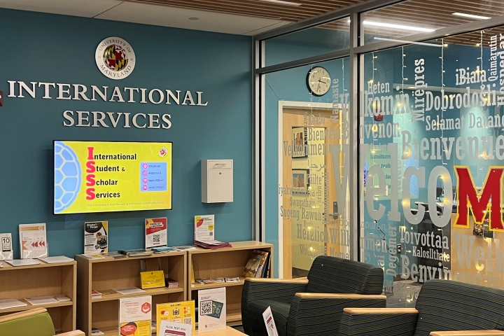

Crackdown on international students continues
with threats on F-1 visas
This scrolly-telling story is best experienced on a desktop or widescreen display.
This scrolly-telling story is best experienced on a desktop or widescreen display.
COLLEGE PARK - The M circle, University of Maryland, College Park's campus (Molecule Jongwilai/Capital News Service)
Story by Sophia da Silva
Data and Web Design by Molecule Jongwilai
Published Dec
5, 2024
WASHINGTON - A researcher at the University of Maryland lost her job last summer. She’s from Colombia and was here on a student visa extension and not having a job means she’ll have to go back.
Her lab lost federal funding earlier this year and couldn’t afford to keep her on. No longer being associated with the university, she was left without housing, without health insurance and without important information from International Student and Scholars Services.
“The issue here with these funding cuts is, it's not only that your research is done, it's that your immigration status is also affected,” she told Capital News Service.
She asked CNS not to identify her for fear of being targeted.
Her story isn’t unique. This year the Trump administration launched a crackdown on international students including deportations, visa revocations, interview pauses and travel bans. Recently proposed changes to F-1 visas threaten to make international students even more vulnerable.
“This is not the U.S. that [it was] when I came here,” she said.
F-1 visas – the visa most students come to the United States under – allows students to stay in the United States under “duration of status”; visa holders are allowed to stay in the U.S. as long as they are making normal progress on their research or academic programs.
A new policy, proposed by the Department of Homeland Security in August, would eliminate duration of status and give students a maximum of four years before applying for another visa known as an “extension of stay.”
“Imagine doing four years of your degree and then being told, ‘no, you actually have to go back and try to reapply for a visa’,” said University of Maryland Graduate Labor Union organizer Rose Ying.
Applications for extension of stay visas are costly to students including processing and legal fees and subject to backlogs, according to the University of Maryland’s comment opposing the proposal. This is all without guarantee that extension will be granted.
The Trump administration argued that its new policy is necessary to counter “student visa abuse”. The University of Maryland said in its comment that getting rid of duration of status only puts more work onto U.S. Citizenship and immigration Services, resulting in even more backlogs
Universities have already seen a decline in foreign student enrollment as a result of new visa policies. The International Trade Administration reported a 19.1% in F-1 arrivals this August.
Maryland as a whole has started to see a decline in international
student enrollment,
especially in the fall semester
Do you want to guess how number went down in fall 2025?
Feel free the draw the rest of a line
chart.
CNS analysed the data of over 38,000 international students’ enrollment between 2020 and 2025 from five major Maryland public universities–University of Maryland, College Park, University of Maryland, Baltimore County, Towson University, Salisbury University and Frostburg State University
[*This data set represents all international student enrollment, not new international students each year, and the University of Maryland, College Park and Towson University do not disclose the number of students from countries that have fewer than 10 enrollments.]
Some universities, including the University of Maryland, College Park, and the University of Maryland, Baltimore County, which account for approximately 90% of international students in this dataset, showed a significant decline in enrollment for fall 2025.
University of Maryland, College Park
University of Maryland, Baltimore County
Other universities, such as Salisbury University and Frostburg State University, actually showed an increase in enrollment at a slower pace.
Salisbury University
Frostburg State University
Student enrollment from each continent illustrated the common trend.
The number of Asian students decreased from fall 2023 to fall 2024,
and had a larger
drop in fall 2025.
While the number of students from most Asian countries, including India, declined, the number of students from a few countries, like China, increased.
India

China
European students’ enrollment had been increasing since 2020, with a small drop in fall 2023, followed by a larger decline in fall 2025.
Most European countries followed this trend, except for a few, such as Spain, where the number continued to grow.
Germany
Spain
The enrollment of foreign students from North and South America also saw a significant decline in fall 2025.
Most countries in the continent followed this pattern, except for a few, such as El Salvador, where the number of students slightly increased.
Canada
El Salvador
African students’ enrollment dropped for the first time in six years,
including students from Nigeria and Ghana, who accounted for the majority of international African students in the data.

Nigeria

Ghana
The number of internationl students from most countries decreased in fall 2025.
Click on a bubble for more details
This chart includes only countries with student enrollment of 10 or more in fall 2024 and fall 2025 for sensible comparability.
Most international students in the United States are graduate students. Many come here for research institutions that have far more resources than their foreign counterparts. That’s why the researcher from Colombia said she came here four years ago as a master’s student.
She was working in Colombia for a non-governmental organization and needed some data for a project.
“My supervisor at the time, she said, ‘oh, check this website, this lab’... And I was like, oh, ok, that's so cool that they have the entire world, and it's free,” she said.
She was impressed and when she got her acceptance letter, she said she was excited to be part of that impressive work. In addition to research and academics, she got life experiences she wouldn’t have otherwise.
"What are the chances besides the university or through the university that I would meet a girl from a small city in China. I have never been in China. She has never been in Colombia," Columbian researcher said.
She’d begun to build a life here and hadn’t thought that four years later she’d have to leave the way she did; with just a couple months to wrap up her life.
She finished her master’s degree at the University of Maryland in 2022 and started what is known as optional practical training – a kind of F-1 extension that allows students to work in their field after graduation – when she started working at the university. She was supposed to have another five months to work on research, to make money and figure out her next move.
“I'm still processing like, okay, this is over. And even like all the things that I have, collecting and buying over these four years, now I just feel like I have one month to get rid of them,” she said.
Her official title was faculty specialist. Her job included developing curriculum, supervising graduate students, supporting and conducting research that now has to stop.
“I don't think I would have the equipment. I don't have the data. I don't have the computer power to run those processes. So I think that research, that project died. It's over,” she said.
Caption go here....
Having a hard deadline for F-1 visas means lost momentum for a lot of international students, especially for doctorate degrees, which – according to the National Center for Science and Engineering Statistics – take a median of 5.7 years to complete.
In its comment against the administration’s visa proposal, the University of Maryland said the new policy takes discretionary power away from universities, an argument Georgetown University reiterated in its comment.
“The ability of PhD students to complete their studies will be in the hands of (U.S. Citizenship and Immigration Services) and not their higher education institution,” wrote Susan Dougherty, the University of Maryland’s director of International Students and Scholars Services.
With less time on their visas, international students said they have felt pressured to rush their degrees which can have serious consequences for a career in their chosen field.
“ If you rush to finish your PhD then it's possible that like you didn't get to publish (research) while you were doing your PhD. And not being able to publish your PhD work while you're doing your PhD usually means that it's a lot harder for you to publish afterwards,” said a fourth-year doctoral student at the University of Maryland, also on a foreign student visa. She asked not to be identified.
This doesn’t just affect doctoral students. The National Center for Educational Statistics says the median time to complete a bachelor’s degree is 4.3 years. Dual majors and joint undergraduate-graduate programs can take even longer.
The administration’s proposed policy would also prohibit students from changing educational objectives, including transferring or changing a field of study. The University of Maryland said that this shows a misunderstanding of graduate education where students often shift focus, move labs or move with advisors as their education progresses.
COLLEGE PARK - International Student and Scholar Services office, University of Maryland, College Park (Molecule Jongwilai/Capital News Service).
“There's already situations on campus where labs are kind of toxic environments for one reason or another, and switching labs has saved people's careers,” said Ying, who is currently a sixth-year doctoral candidate at Maryland.
Universities worry that these constraints take away the flexibility that make the U.S. so attractive to international students. While these changes to F-1 visas have not been implemented yet, many other policies affecting international students have.
The American Association of University Women sponsors around 60 women to study in the United States. The organization encountered issues this year during a visa interview pause imposed by the Trump administration in May.
“A number ended up having to defer their fellowship to next year. And many ended up just declining them entirely after the delays just continued to cascade and they knew that they didn't have a chance,” said AAUW CEO Gloria Blackwell.
Blackwell said that even when fellows did arrive at their host universities, their research and studies were affected by funding cuts.
“I feel like in some way, also, the US is losing some …high qualified professionals,” said the researcher from Colombia.
She said that international students already have to prove themselves – adapting to a new system, new country, new language – and get important training from the U.S. She said that these new policies are unfair and result in the U.S. losing knowledge from these students.
"I didn't grow up here – I didn't – I wasn't born here but I chose to be here," she said.